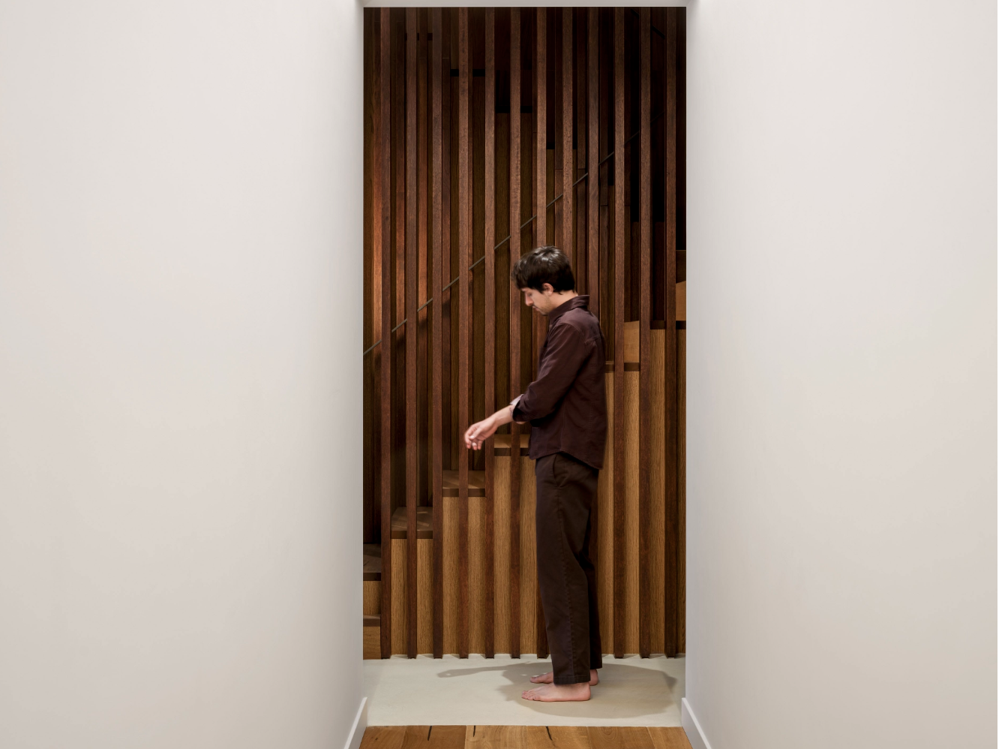

Desierto de las Palmas
A home and art studio within the ruins of a historic Carmelite monastery, designed to foster contemplation through a modular timber structure that engages the existing stone fabric and landscape.
Architecture Portfolio
Architecture student at the Universitat Politècnica de València with international experience in Spain, the Netherlands, and the United States. Focused on the full architectural process — from conceptual design to technical development — with strong emphasis on representation, visualization, and graphic documentation.

A home and art studio within the ruins of a historic Carmelite monastery, designed to foster contemplation through a modular timber structure that engages the existing stone fabric and landscape.

A cultural center integrating workshops, auditorium, and exhibition spaces within a repurposed industrial structure, connecting the town to its agricultural surroundings.
Concept development, spatial thinking, and architectural strategy from brief to built form.
Visualization, technical drawings, diagrams, and graphic documentation for presentation and publication.
Software-driven workflows, construction documentation, and coordination across design disciplines.
Studied and worked across Spain, the Netherlands, and the United States — from academic studios to professional roles at studio PROTOTYPE (Amsterdam) and Stantec Buildings (Texas), with exposure to residential, cultural, and infrastructure projects.
Residential, cultural, and experimental architecture, with emphasis on strong visualization skills and a balance between conceptual ambition and technical precision.